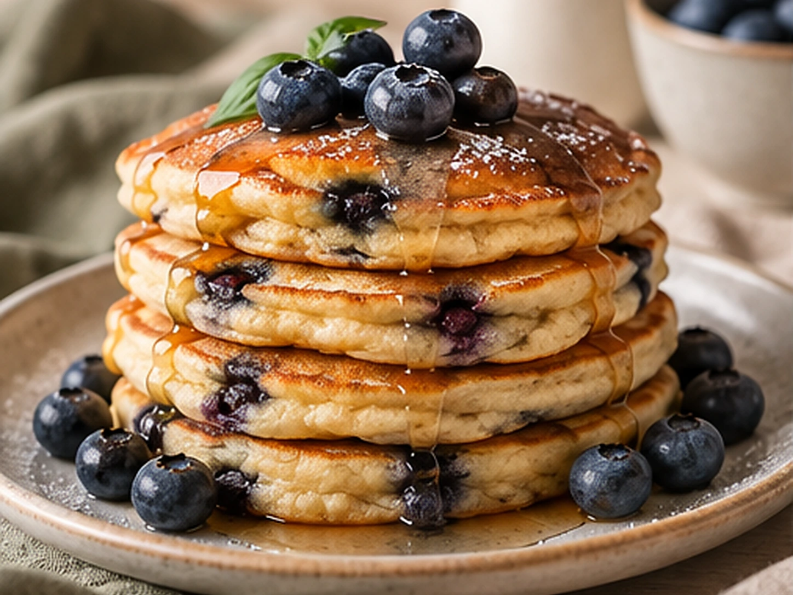
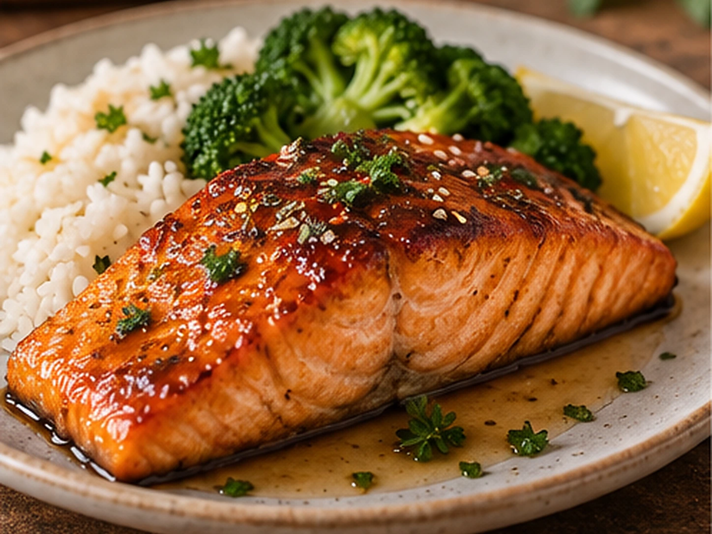
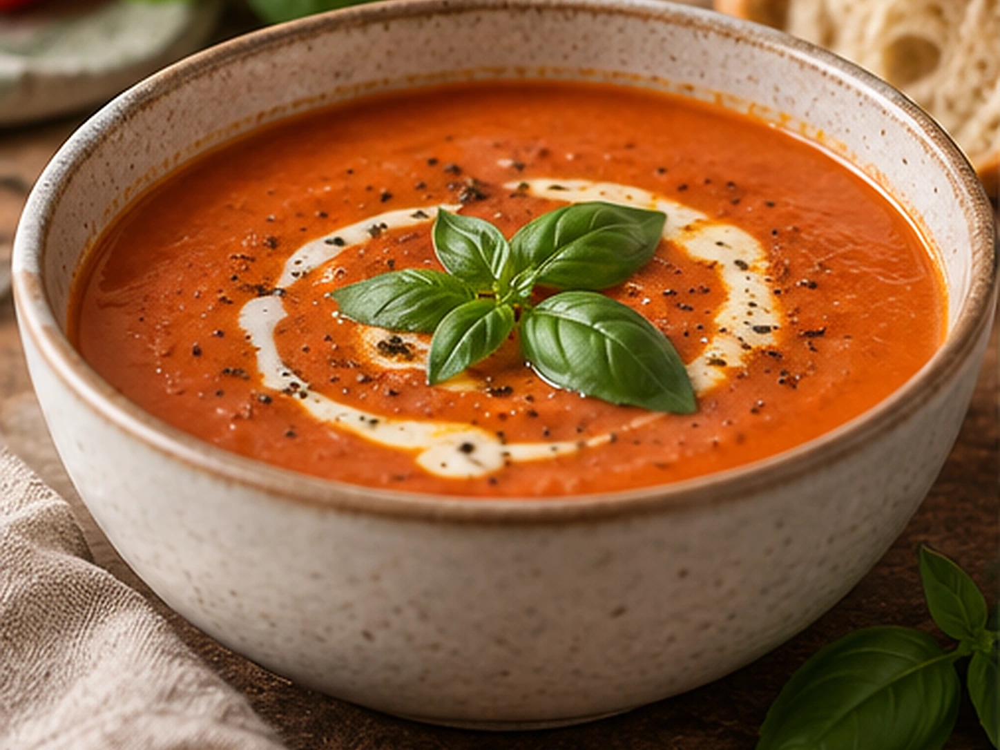
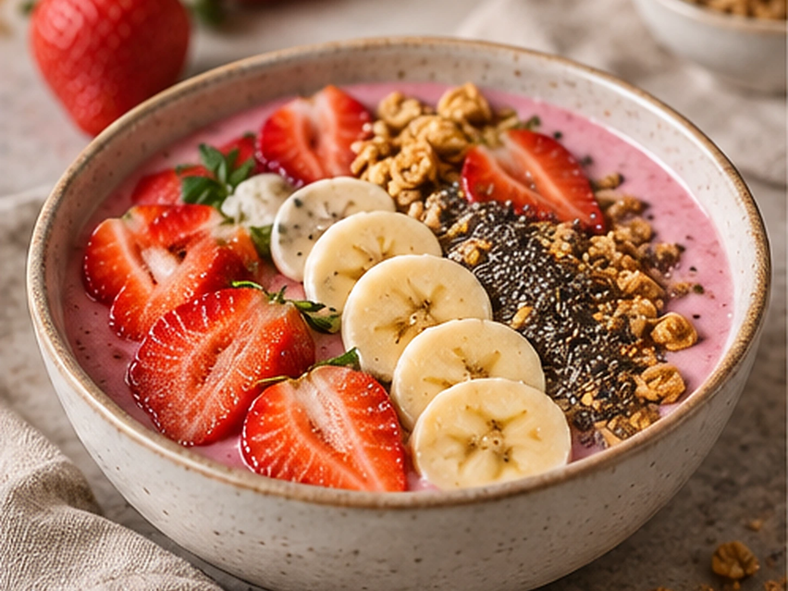
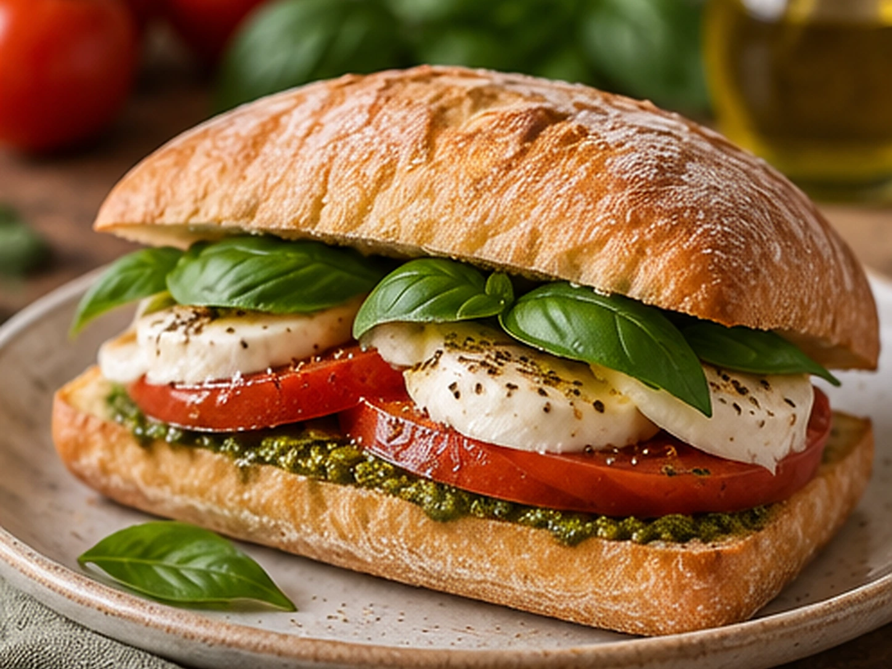
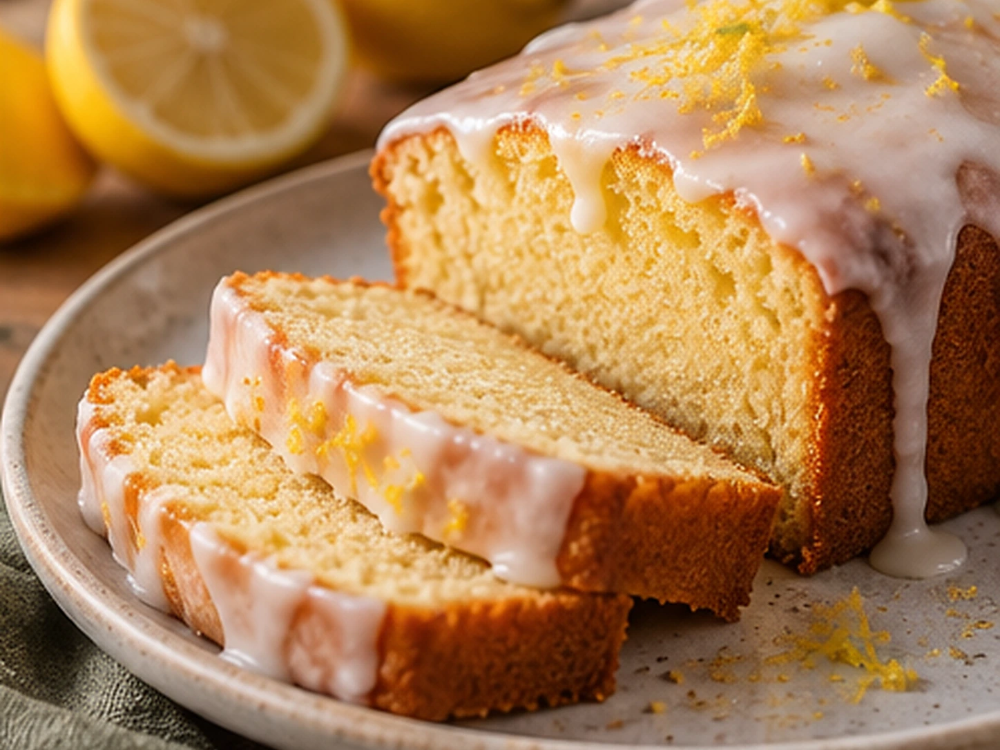

Dinner
Creamy Chicken Pasta
A rich and creamy pasta dish, perfect for an easy dinner.
30 mins
Explore easy, comforting recipes and find something delicious to make today.
A rich and creamy pasta dish, perfect for an easy dinner.
30 mins

Fresh avocado on toasted bread for a quick breakfast.
15 mins

Soft and delicious homemade chocolate brownies.
45 mins

Light, fluffy pancakes bursting with fresh blueberries.
25 mins

Tender baked salmon coated in a sweet and savoury honey-garlic glaze.
30 mins

A comforting tomato soup with fresh basil, perfect with crusty bread.
30 mins

A refreshing smoothie bowl topped with crunchy granola and fresh fruit.
10 mins

A fresh Italian-inspired sandwich filled with mozzarella, juicy tomatoes and basil.
15 mins

A soft, buttery lemon cake finished with a sweet and tangy drizzle.
60 mins